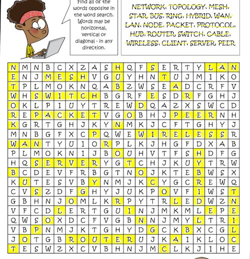

Four basic network topologies
2025-06-24 by , tagged as
A recap of a little introduction we got from le teach:
You have your rings, your stars, your buses and your meshes:
- Rings consist of a series of hosts connected to each other in a linear manner. This topology loops, hence the name. These are not very stable, mostly because of potential connection failures.
- Stars have a core host, which acts as the "heart" of the server. To this core is connected a series of outer hosts. Each is connected to the core via one separate line. This is a centralized topology.
- Buses are a linear topology, like rings. This topology does not loop, however, making it even more fragile than the ring topology.
- Meshes are a decentralized topology, consisting of a series of hosts interconnected in an unorganized manner. This topology is much more reliable than any of the others previously discussed, but is, in turn, more costly and difficult to set up. This topology, however, is quite common.
THE WORD SEARCH THING
I don't know how many years it's been since I last did one of these.
